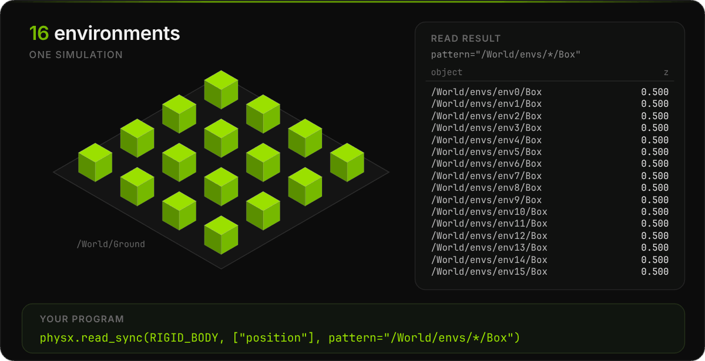

Many Copies of a Scene#
clone is a feature for robot training, which simulates many copies of one environment at the
same time. It makes the copies in the simulation only, and one read returns the state of every
copy.

Environments and Copies#
An environment is one self-contained setup, such as a robot and the objects it works with. Put
each environment under its own prim, such as /World/envs/env0. Keep everything that all
environments share, such as the ground plane, outside of them.
Clone an Environment#
This program, many_copies_clone.py, builds one environment with a falling box, clones it into a 4 by 4 grid, and reads
the box of every copy after 1 s:
import ovstage
from ovphysx.population import physics_population_descs
from ovphysx import PhysX
from ovphysx.samples.python_samples.schema_support import physx_schema_paths
from ovphysx.types import SimObjectType
# A ground plane and one environment, env0, with a 1 m box 2 m above the ground.
SCENE = """#usda 1.0
(
metersPerUnit = 1
kilogramsPerUnit = 1
upAxis = "Z"
)
def Xform "World"
{
def PhysicsScene "PhysicsScene" {}
def Plane "Ground" (
prepend apiSchemas = ["PhysicsCollisionAPI"]
)
{
uniform token axis = "Z"
}
def Xform "envs"
{
def Xform "env0"
{
def Cube "Box" (
prepend apiSchemas = ["PhysicsRigidBodyAPI", "PhysicsCollisionAPI"]
)
{
double size = 1
double3 xformOp:translate = (0, 0, 2)
uniform token[] xformOpOrder = ["xformOp:translate"]
}
}
}
}
"""
def box_heights(physx):
"""Read the box of every copy with one path pattern.
Return its z, keyed by path.
"""
heights = {}
with physx.read_sync(
SimObjectType.RIGID_BODY, ["position"], pattern="/World/envs/*/Box"
) as result:
for group in result.groups:
paths = result.dictionary.get_path_strings(group.prim_list)
for path, position in zip(paths, group.tensors[0].numpy()):
heights[path] = float(position[2])
return heights
ovstage.population.register_usd_schemas([str(p) for p in physx_schema_paths()])
stage = ovstage.Stage("many_copies")
ovstage.population.open_usd_from_string_with_desc(
stage, SCENE, ordinal=1, time=ovstage.population.DEFAULT_TIME, descs=physics_population_descs(rendering=True)
)
stage.advance_write_floor(ordinal=1).wait()
physx = PhysX()
physx.wait_task(physx.attach_ovstage(stage, read_ordinal=1))
# Copy env0 to env1 through env15 on a 4 by 4 grid, 2.5 m apart,
# before the first step.
# Each pose is a position (x, y, z) and a rotation quaternion (x, y, z, w).
targets = [f"/World/envs/env{i}" for i in range(1, 16)]
poses = [
(2.5 * (i % 4), 2.5 * (i // 4), 0.0, 0.0, 0.0, 0.0, 1.0)
for i in range(1, 16)
]
physx.wait_task(physx.clone("/World/envs/env0", targets, anchor_transforms=poses))
print(f"One read returns {len(box_heights(physx))} boxes.")
for step in range(60):
physx.step_sync(1.0 / 60.0)
heights = box_heights(physx)
print("Box heights after 1 s, laid out like the grid:")
for i in range(16):
z = heights[f"/World/envs/env{i}/Box"]
print(f" env{i:<2} {z:.3f} m", end="\n" if i % 4 == 3 else " ")
physx.wait_task(physx.detach_ovstage())
physx.destroy()
stage.destroy()
It prints:
One read returns 16 boxes.
Box heights after 1 s, laid out like the grid:
env0 0.500 m env1 0.500 m env2 0.500 m env3 0.500 m
env4 0.500 m env5 0.500 m env6 0.500 m env7 0.500 m
env8 0.500 m env9 0.500 m env10 0.500 m env11 0.500 m
env12 0.500 m env13 0.500 m env14 0.500 m env15 0.500 m
Notice the following:
Each copy takes the target path you give it, and the objects inside keep their names below it, such as
/World/envs/env7/Box.Each pose places the root of one copy, and
(0, 0, 0, 1)as its rotation means no rotation. Objects inside the copy keep their places relative to the root.Clone after
attach_ovstageand before the first step. ovphysx refuses a clone after the first step.The copies exist only in the simulation. ovphysx adds nothing to the stage, which still holds only
env0.
One Read for All Copies#
pattern="/World/envs/*/Box" selects the box of every copy, because * stands for any one name,
from env0 to env15.
Selecting Objects explains patterns, and
Reading Values shows how to tell the rows apart by path.
Do Copies Collide?#
Simulation On |
Objects of Different Copies |
|---|---|
GPU, with the default GPU settings |
Copies made by |
CPU |
Collide when they overlap, and push each other away |
On the GPU, clone gives each copy its own environment ID, and objects with different IDs do not
collide. This holds while the scene keeps its default GPU settings.
Scene Cloning lists the conditions.
Either way, the copies still collide with the shared ground plane. Place the copies apart in any case, so that your program also works on the CPU.
More Detail#
Cloning has complete Python and C programs.
Scene Cloning covers environments built from several clone calls, collisions between copies, and copies on the ovstage stage for a renderer.
Fast Simulations helps when many copies make each step slow.